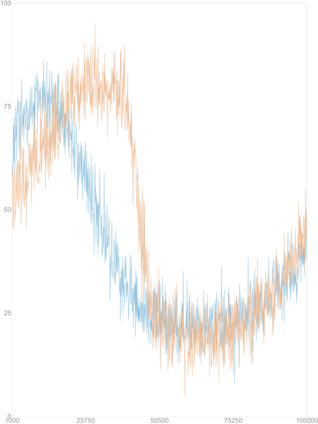
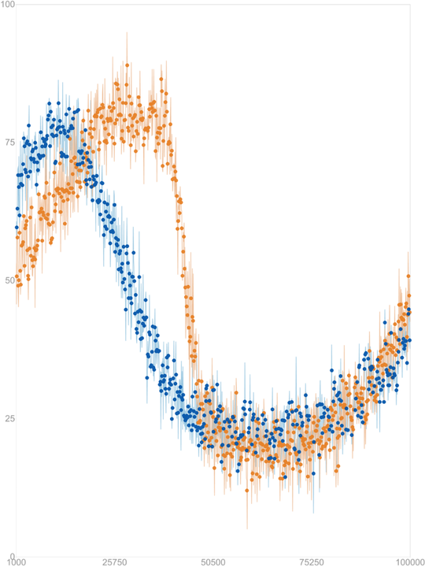
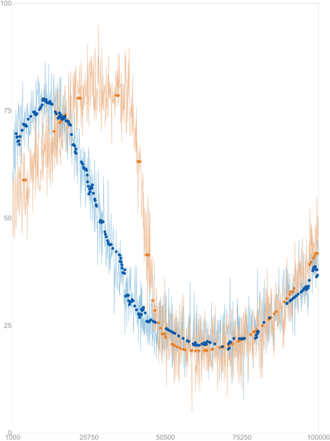
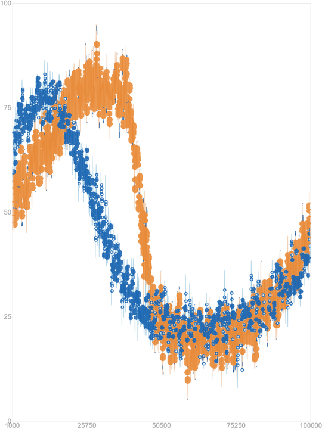
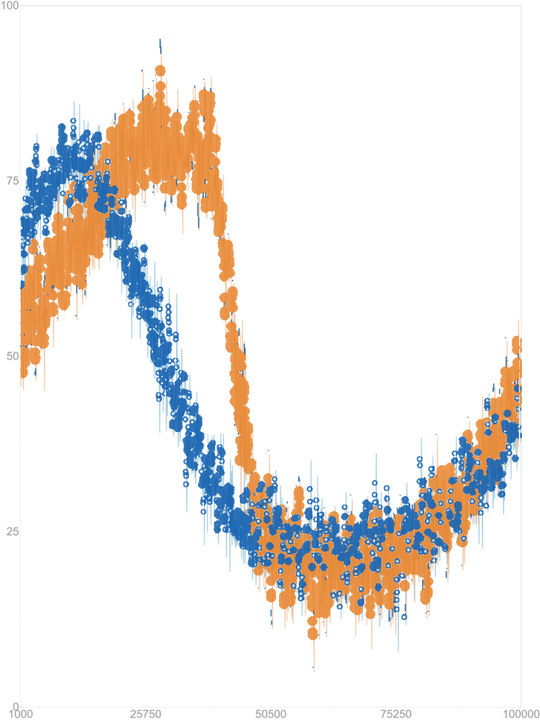

LinePilot Digitizer · University of Georgia
LinePilot reads the axes, follows each colored curve column by column, and hands back a CSV you can re-analyze. Three calibration modes let you choose between full automation and precise manual control — the curve recovery is the same either way.
Digitization is two problems. Calibration maps image pixels to data coordinates; a calibration error shifts every recovered point. Curve recovery follows the plotted line, which is a continuous path rather than a cloud of independent pixels. LinePilot keeps the recovery stage fixed and lets you pick how calibration happens.
You click four axis points — X min, X max, Y min, Y max — and LinePilot uses them directly. A guided banner walks you through each click. Full control, no surprises.
Same four clicks, but each one is snapped to the nearest tick or axis stroke using local image intensity. A detected crossing refines both coordinates; a single stroke refines only the coordinate across it. If no feature is found nearby, your click is kept as is — precision is added only where the image supports it.
LinePilot finds the plot region, crops the two axis neighborhoods, reads the numeric labels with Tesseract (and RapidOCR when available), pairs labels with ticks, and rejects readings that disagree with the common scale. If the required endpoints can't be established it reports failure instead of guessing — and you can fall back to a manual mode.
Target colors are detected automatically or picked by you. In each image column, pixels within tolerance of a target color are grouped into vertical runs; each run's midpoint is a candidate and its thickness is extra evidence. Dynamic programming links candidates across columns, rewarding sustained support and penalizing abrupt jumps and gaps, so isolated color-matched specks lose out to the real line. Only image-supported points are exported — missing columns are never filled with invented values.
One example from DigitizerBench — an overlapping two-line plot rendered with Altair — digitized by the state-of-the-art automatic tool, the state-of-the-art manual tool, and the three LinePilot modes.





Example D0001-overlapping-altair from DigitizerBench (Fig. 1b in the paper). The full nine-tool comparison, including LineEX, WebPlotDigitizer and Engauge Digitizer, is in the online appendix.
| Method | FPC-NRMSE ↓ | Output success | Trusted usability | Points / line |
|---|---|---|---|---|
| ChartOCR | 0.953 | 30.2% | 5.4% | 29 |
| LineEX | 0.997 | 36.6% | 0.4% | 14 |
| LinePilot (OCR) | 0.672 | 55.1% | 38.2% | 1,180 |
FPC-NRMSE assigns a full unit of error to any image with missing, unusable or catastrophically wrong output, so it rewards reliability, not just accuracy on the easy cases.
| Method | FPC-NRMSE ↓ | Output success | Trusted usability | Points / line |
|---|---|---|---|---|
| PlotDigitizer Pro | 0.097 | 100% | 91.7% | 475 |
| WebPlotDigitizer | 0.164 | 98.3% | 86.7% | 195 |
| Engauge Digitizer | 0.790 | 55.0% | 23.3% | 235 |
| LinePilot (standard) | 0.101 | 100% | 91.7% | 1,025 |
| LinePilot (enhanced) | 0.081 | 100% | 93.3% | 1,027 |
Trusted usability: correct line count, finite error on every match, ≥ 20 valid points and ≥ 80% coverage. Values from Table 3 of the paper.
The first benchmark built specifically to evaluate plot digitizers end to end. Rather than sampling plots at random, it varies signal, rendering and plot-structure factors in an orthogonally balanced design, so you can see which factors break a digitizer — not just how often it breaks.
For automatic digitization, image presentation matters far more than signal complexity: figure width has the largest effect, then DPI and renderer; noise and most curve-shape factors are not significant. For human-guided digitization, one-pixel lines are the main failure mode — performance stabilizes at 3–5 px. Every image ships with exact ground-truth curves and tick coordinates, plus the master seed, factor levels and orthogonal-array matrices needed to regenerate it.
The desktop app is a single file — download, double-click, digitize. The command line and Python API run from source.
Windows SmartScreen will warn on first run because the app isn't code-signed. Choose More info → Run anyway. If nothing happens at all, Smart App Control is blocking it — run from source instead.
# get the source
git clone https://github.com/RayanA07/LinePilot.git
cd LinePilot/Digitizer
py -m pip install -r requirements.txt
# one image, everything auto-detected (OCR calibration)
py digitizer.py graph.png
# set the axis values yourself, log-scale Y, custom output folder
py digitizer.py graph.png --axis 0,10,0,100 --log-y --out results/
# a whole folder, with a per-file report
py digitizer_batch_cli.py figures/ --out digitized/from digitizer_api import digitize_image
out = digitize_image("graph.png",
axis_values=(0, 10, 0, 100), # None = read by OCR
color_rgb=None, # None = auto-detect
output_dir="results")
out.csv_path # results/graph_digitized_points.csv
out.overlay_path # results/graph_digitized_overlay.png
out.point_count, out.used_ocr, out.ocr_confidence<image>_digitized_points.csv — columns color_slot, color_r, color_g, color_b, x, y, x_px, y_px.
<image>_digitized_overlay.png — your image with the calibration box, OCR regions and extracted points drawn on top.
Add --verbose 1 for a log with the OCR confidence score; a low score is a hint to pass --axis yourself.
A companion app (AccuracyTester.exe, or accuracy_batch_cli.py for folders) that scores a digitized CSV against a reference CSV: MAE, RMSE, R², bias, MAPE/sMAPE/WAPE, with overlay, residual and outlier plots.
@article{ma2026linepilot,
title = {LinePilot Digitizer: Line-Plot Recovery with
Manual and Automatic Calibration},
author = {Ma, Fengbo and Akhtar, Rayan and Joshi, Aakash H.
and Li, Xiaoting and Sun, Haijian and Xiang, Zhen
and Chen, Xianyan and Zhao, Yiping},
journal = {arXiv preprint arXiv:2609.19377},
year = {2026},
doi = {10.48550/arXiv.2609.19377}
}This work was supported by the National Science Foundation through the Pathways to Open-Source Ecosystems (POSE) program, award No. 2518273. The authors gratefully acknowledge the support, guidance and collaboration of all members of the SpectraGuru™ development and stakeholder teams.
LinePilot is part of the open-source ecosystem for Raman and SERS spectroscopy developed in the Zhao lab at the University of Georgia.